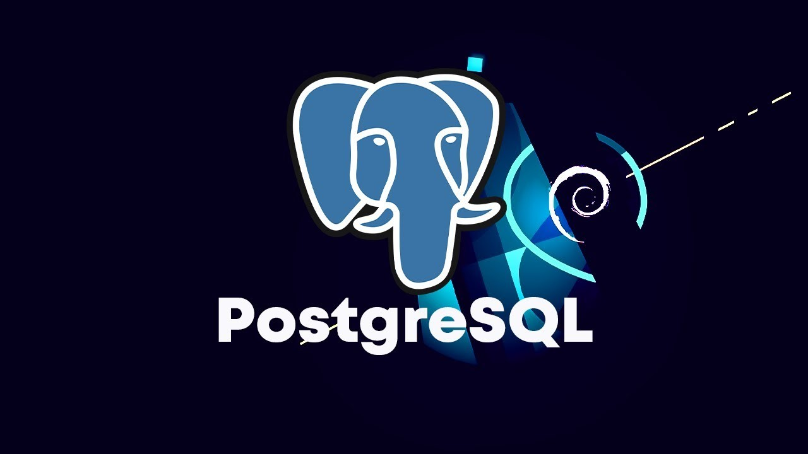
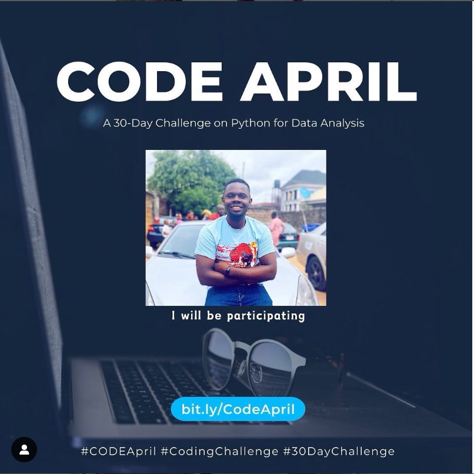

The analysis aimed to uncover trends and patterns in a movie dataset containing key attributes like genre, start year, director, stars, votes, and ratings of each movie using Postgres. Using SQL techniques such as filtering, grouping, and aggregating, the analysis identified popular genres, trends in the start year, and correlations between directors' and stars' success. These findings can help inform future strategies in the movie industry.


Through this project, the movie dataset was transformed into actionable insights using thorough data cleaning, exploratory data analysis, and visualization techniques using Python. These findings provided valuable perspectives for movie industry professionals and enthusiasts alike.
This project provided a deep dive into the airline dataset through rigorous data cleaning, EDA, and visualization. The insights derived are valuable for airlines, regulators, and passengers, offering a clearer picture of the factors affecting flight punctuality and operational efficiency.
The completed Power BI project provides a comprehensive view of the sales data, enabling stakeholders to make informed decisions based on actionable insights. Users can easily track sales performance, identify trends, and take strategic actions to improve sales outcomes
The completed Excel project provides a detailed analysis of EPL player performance, offering valuable insights into individual and team contributions. The interactive dashboard and visualizations allow users to explore player statistics, compare performances, and make data-driven decisions regarding player evaluations and team strategies.

Code April was a 30-day coding challenge coordinated by Promise Ekeh to promote coding skills, foster learning, and encourage participation in coding-related activities throughout April. It gave individuals the opportunity to enhance their coding skills, gain confidence, and celebrate achievements as they progressed through the challenge over 30 days which was capped with a very comprehensive project using Python.